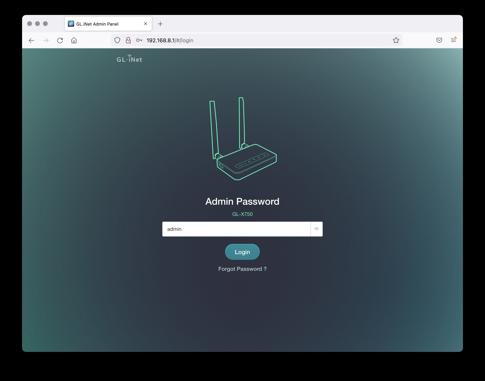
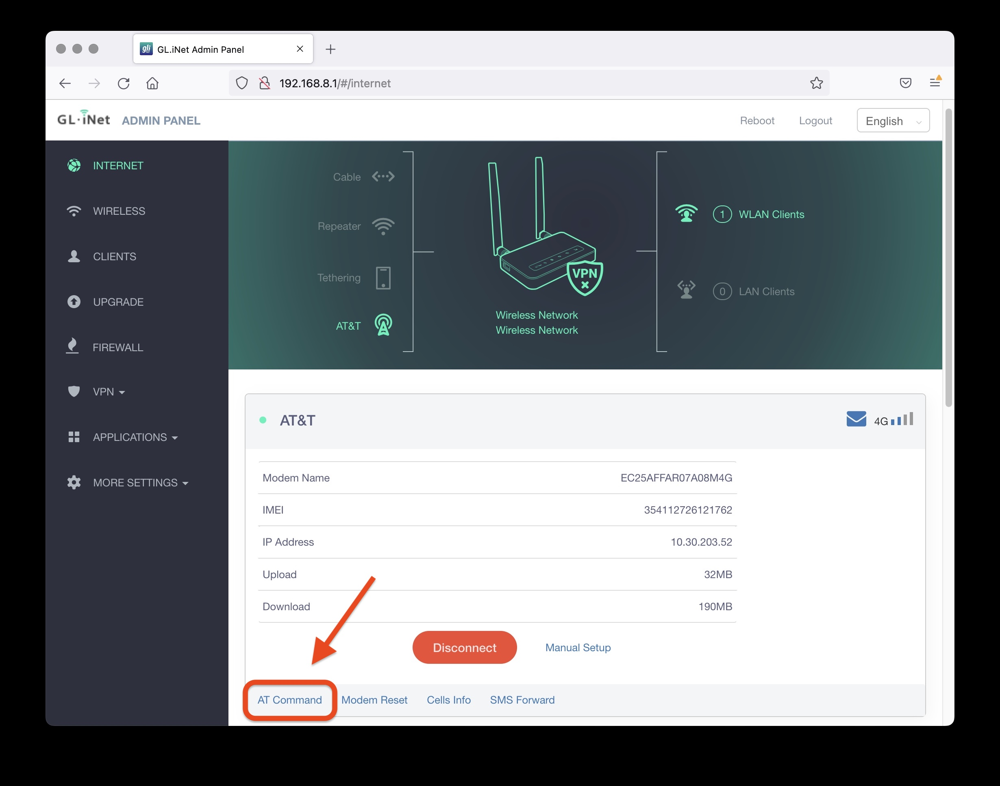
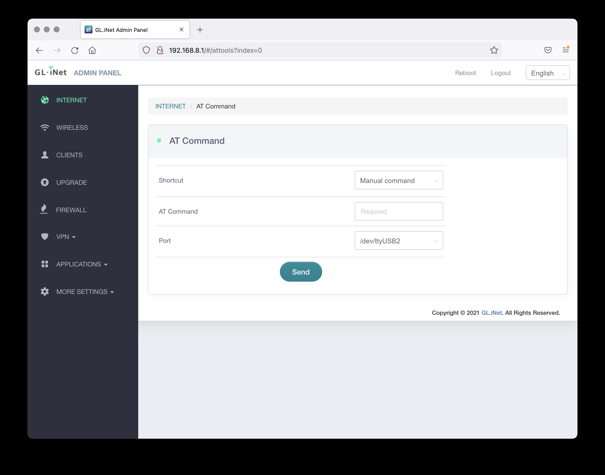
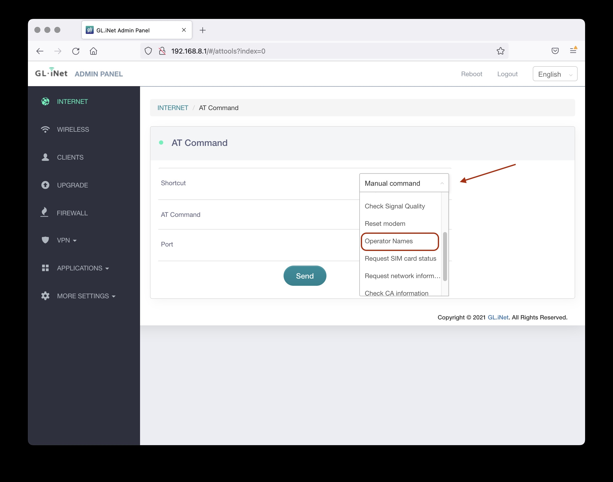
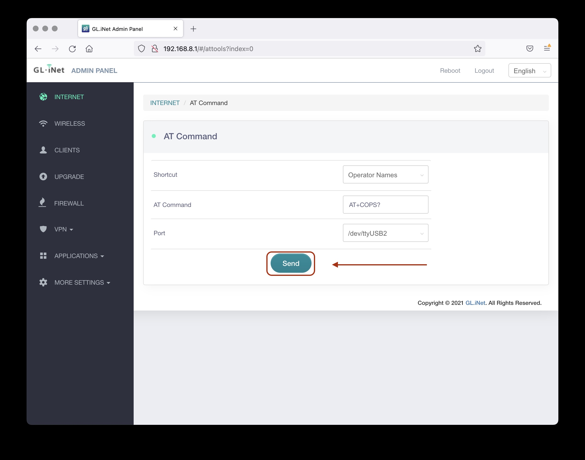
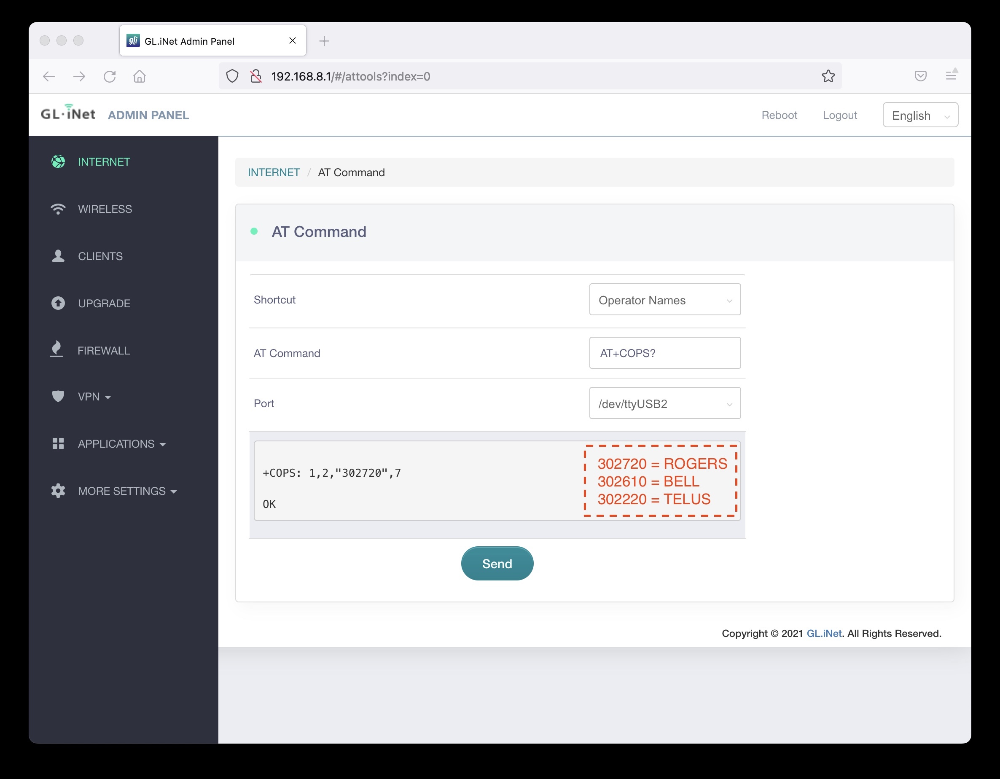

Select Your Network
A Tutorial to Help You Optimize Your Device for the Best Performance
1. Access The Admin Panel
◦ Open a web browser (we recommend Chrome, firefox) and visit http://192.168.8.1. You will be directed to the login page of the web Admin Panel.
◦ Login to the admin panel with password "admin" (You can change this password later in settings).

2. The Admin Panel
◦ After you have logged in, you will see the web Admin Panel of your router. It allows you to check the status and manage the settings of the router.
◦ Navigate to the "AT Command" button and click it. (highlighted in red in the screenshot below).

3. AT Command Page
◦ Once you have navigated to the AT Command Page you will be able to begin configurating the network you would like your device to lock to.
◦ By default, when you plug in the router, it is set to automatically select the network with the best signal. Sometimes the best signal does not give you optimal speeds.

4. Manually Select Network
◦ You can customize many things by utilizing AT Commands. Feel free to use the shortcut dropdown to select a preset command and send it.
◦ To manually lock your device to a specific carrier you will need to use one of the following manual commands:
Bell
AT+COPS=1,2,302610
Rogers
AT+COPS=1,2,302720
Telus
AT+COPS=1,2,302220
◦ You may need to send the command multiple or refresh the page to successfully send the command
◦ If the requested network is not available you may get an error, either try again later or select a different network to get your internet connection back.
◦ Here is how to veiw the current network you are connected to:


